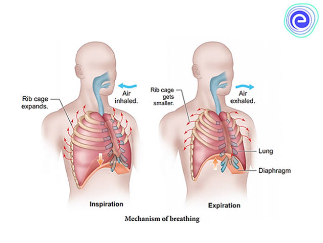
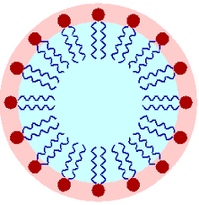

Phisiology
1st lecture
topics
- Function
- Zones
- conducting zone
- respiratory zone
- Dead space
- Gas Exchange levels
- internal level
- external level
- Mechanism of respiration
- Respiratory pressures
- Intra-pleural pressure
- causes of negativity of the intraplueral pressure
- Functions of negativity of the intraplueral pressure
- causes of recoil tendency of the lungs
- Surface tension
Function
- Gas exchange the main function.
- Phonation with larynx.
- Olfaction with olfactory receptors in mucus membrane.
Respiratory zones
-
conducting zone
all the structures the air passes through before reaching the Respiratory zone.
function
- warms and humidifies inspired air.
- filters and cleans:
- mucus secreted to trap particles in the inspired air.
- mucus moved by cilia to be expectorated
أي كي يتم طردها
- respiratory zone
region of gas exchange.
includes respiratory bronchioles and alveolar sacs.
Dead space
Defination:
the volume of the airways that doesn't participate in gas exchange.
classified into:
- Anatomical dead space:
the volume of air which inhaled that doesn't take part in the gas exchange because it remains in the conducting airways.
equals 150ml
- functional(alveolar) dead space:
- the alveoli that fail to act in gas exchange due to collapse or obstruction.
- alveoli don't recieve or has decreased blood supply.
Physiological dead space
- equals anatomical dead space + alveolar (functional) dead space.
-
in normal person:
physiological dead space = anatomical dead space.
as the alveolar space = Zero
Function of dead space:
- warming and humidifying
- distributing air
- defense
increases in:
- old age
- sympathetic and adrenaline
- inspiration
decreases in:
Gas exchange levels
2levels:
-
internal respiration:
also called cellular respiration
it refers to the use of oxygen within mitochondria to generate ATP by
Oxidative Phosphorylation, and the production of Co2 as waste product.

-
external respiration:
consists of 4 processes:
-
pulmonary ventilation:
movement of the air into lungs and out of the lungs.
inspiration and expiration

- exchange of O2 and CO2
occurs between lungs air spaces and blood by diffusion.
- transport of O2 and CO2 between lungs and body tissue by the blood.
- exchange of O2 and CO2 between body tissue by diffusion.
The respiratory rate
the respiratory rate in adults = 12-18 cycle/min
the respiratory rate in infants = 40 cycle/min
it declines with age.
Mechanism of respiration
Respiratory cycle: inspiration – expiration – expiratory pause.

inspiration
active process initiated by the contraction of:
-
diaphragm
- the most important respiratory muscle
- it accounts for 75% of the change of the intrathoracic volume.
- when it contracts , its dome moves downward into the abdomen , increasing the vertical diameter of the thorax.
- it is supplied by the phrenic nerves arising from (c3 ,c4 ,c5).
- extranal intercostal muscles
-
contraction of them causes upward and outward movement of the ribs with an increase of the anterioposterior and transverse diameters of the thorax.
lungs follow the changes occur in the thorax as the lungs are firmly attached to the thorax through the pleural sac.
AS the thorax enlarges the lungs inflate ,causing increase in size of the alveoli.
Therefore, the pressure of the alveoli drops to be less than atmospheric pressure
So, air flows from the atmosphere through the airways into the alveoli.
- either diaphragm or the external muscles alone can maintain adequate ventilation at rest.
-
the inward flow of air increases the pressure in the alveoli until its pressure becomes equal to atmospheric pressure.
when that happens no air ceases.
Forced inspiration
active process.
IN forced inspiration (deep inspiration),there are accessory inspiration muscles that contract which are:
- sternocleidomastoid
- scapular elevator
- serrati anterior muscles
- scaleni muscles
expiration
passive process that occurs when there is relaxation of respiratory muscles.
So, the chest wall starts to recoil inward to its original dimensions ,the lungs becomes smaller and the air in the alveoli becomes temporarily compressed SO, the alveolar pressure becomes > the atmospheric pressure SO, the air flows outward the lungs.
Forced expiration
it is also called deep expiration.
active process
in forced expiration ,expiration of larger volume of air is achieved by contraction of accessory expiration muscles ,which are:
- internal intercostal muscles:
pulls the rib cage
downward.
- abdominal muscles:
increase the intra-abdominal pressure and forces the relaxed diaphragm up into the thorax decreasing its volume
Respiratory pressures
the intra-alveolar pressure (Palv)= intrapulmonary pressure
it is the presence of air in the alveoli.
The atmospheric pressure at sea level = 760 mmHg
All other pressures in ghe respiratory system are expressed relative to the atmospheric pressure.
the difference betweem Palv and Patm is what indicates the direction of air
if it comes into the lungs.
comes out the lungs.
if
- Patm > Palv :
inspiration occurs and the Palv is negative= -1mmHg.
- Patm > Palv :
expiration occurs and Palv is possitive = +1mmHg.
- At the end of inspiration and expiration Palv = Zero
the most important sentence of the last 2 topics is:the change of the Palv are caused by thechanges in the volume of the lungs
Intra-pleural pressure(IPP or Pip)
- it is the pressure inside the pleural space (between the two layers of lluera)
- it is always negative under normal conditions.
- it equals
- at the end of expiration : -4mmHg
- at the end of inspiration : -4 _ -8mmHg
- During forced inspiration: -30mmHg
- During forced expiration: +40mmHg
Causes of negativity of the intra-plueral pressure
This negativity is due to continous tendency of the lungs to recoil inward against continuous tendency of the chest wall to expand outward.
Both the lungs and thoracic wall are elastic.
Each elastic substance has a volume where it is neither stretched nor compressed which is called relaxation volume.
relaxatin volume of:
-
lungs is 1L
- thoracic wall is 6L
during the normal expiration the volume of each of lungs and thoracic wall = 2.3L.So, the lungs tend to recoil upward and the thoracic wall tends to recoil downward.
Functions of the negative intra-pleural pressure
its functions:
- lung expansion by antagonizing its recoil tendency.
- Helps venous and lymphatic return to the heart.
- Responsible for the dome shape of the diaphragm.
causes of recoil tendency of the lungs
its causes:
- elastic tissue in the lungs (collagen and elastin fibers)
these accounts ⅓ of the total recoil tendency.
- the surface tension of the fluid lining the alveoli.
it accounts ⅔ of the total recoil tendency.
surface tension of the alveoli
the surface of the alveolar cells is moist رطب.So, the alveoli can be considered as air filled sacs lined with water.
At an air -water interface ,the attractive forces between the water molecules (known as surface tension) make the water like a stretched balloon that constantly tries to shrink.
This surface tension is strong enough to collapse the alveoli.So, it is extremely important that typeII alveolar cells pulmonary secrete a substance known as Surfactant

Surfactant reduces the attraction forces between water molecules on the alveolar surface.So, it reduces surface tension and hence facilitating lung expansion during inspiration.